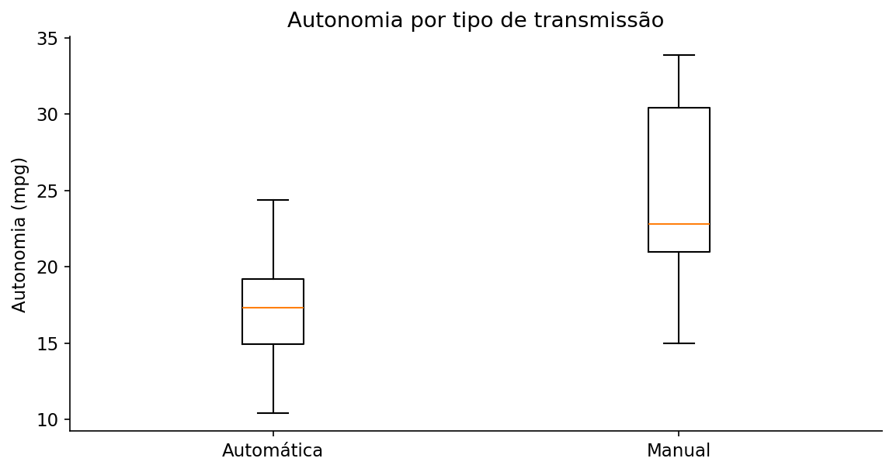

Teste t de Student (dois grupos)
Verifica se as médias de dois grupos independentes diferem, supondo variâncias iguais.
01 · O que é?
Verifica se as médias de dois grupos independentes diferem, supondo variâncias iguais.
02 · Pressupostos e como verificá-los
- Amostras independentes, distribuição aproximadamente normal em cada grupo para amostras pequenas, variâncias homogêneas.
- Use diagnóstico gráfico.
- Se desigualdade plausível, prefira Welch.
Confira o delineamento da pesquisa e os gráficos exploratórios. A validade inferencial depende dos pressupostos do modelo, não apenas do resultado de um teste diagnóstico.
03 · Hipóteses e estatística de teste
Hipóteses
Alternativas bilateral e unilaterais
Bilateral: \(\mu_1\neq \mu_2\). Detecta desvios em qualquer direção.
Unilateral à direita: \(\mu_1>\mu_2\). Investiga aumento ou associação positiva.
Unilateral à esquerda: \(\mu_1<\mu_2\). Investiga redução ou associação negativa.
A direção deve ser escolhida antes de observar os resultados. Para o teste t e os testes de associação, use
alternative = "two.sided"
,
"greater"
ou
"less"
. Em testes com grupos ou pares, a interpretação da direção depende da ordem dos grupos ou da subtração.
Estatística, estimador ou critério de ajuste
Em que:
- \(\bar Y_1,\bar Y_2\)
- médias amostrais dos grupos
- \(S_p^2\)
- variância agrupada, [(n1-1)S1²+(n2-1)S2²]/(n1+n2-2)
- \(n_1,n_2\)
- tamanhos dos grupos independentes
- \(gl\)
- graus de liberdade da distribuição t
Os valores amostrais são obtidos diretamente dos dados; os estimadores, pesos ou coeficientes específicos são calculados pelas funções do R indicadas no exemplo. Não substitua parâmetros desconhecidos por valores arbitrários.
04 · Como interpretar os resultados?
\(p<0{,}05\) : rejeite igualdade de médias; \(IC_{95\%}\) para diferença exclui 0.
Além da decisão ao nível de 5%, examine a direção e a magnitude do efeito, seu intervalo de confiança e a adequação dos pressupostos. Um valor-p não quantifica a importância prática do resultado.
Em um teste unilateral, a rejeição só sustenta a direção previamente definida. Um resultado de sinal contrário não autoriza inverter a hipótese após examinar os dados.
05 · Como executar no R?
Examine os dados, execute a análise e compare os resultados com os valores e gráficos apresentados a seguir.
Copie o código para o RStudio ou baixe o arquivo .R para executar o exemplo completo.
06 · Exemplo de aplicação
Contexto dos dados
Em mtcars, am identifica transmissão automática ou manual; mpg representa autonomia.
Objetivo da análise
Comparar a autonomia média entre dois grupos independentes sob a hipótese de variâncias populacionais iguais.
# Teste t de Student (dois grupos) ----
# Ajuste e resultados ----
aggregate(mpg ~ am, mtcars, function(x) c(n = length(x), media = mean(x), dp = sd(x)))
resultado <- t.test(mpg ~ am, data = mtcars,
var.equal = TRUE, conf.level = 0.95)
print(resultado)
boxplot(mpg ~ am, data = mtcars, names = c("Automática", "Manual"))
# Visualização e diagnóstico ----
boxplot(mpg ~ factor(am), mtcars, names = c("Automática", "Manual"), xlab = "Transmissão", ylab = "Autonomia (mpg)")
# Análises unilaterais: use somente a direção definida antes da análise ----
# Ordenação dos grupos: am = 0 (automática) menos am = 1 (manual)
# H1: media_automatica > media_manual
print(t.test(mpg ~ am, data = mtcars, var.equal = TRUE, alternative = "greater"))
# H1: media_automatica < media_manual
print(t.test(mpg ~ am, data = mtcars, var.equal = TRUE, alternative = "less"))
Saída numérica para conferência
Valores recalculados independentemente com os mesmos dados; a formatação da saída pode diferir da apresentada pelo R.
Two Sample t-test (Student) t = -4.10613, df = 30, p-value = 0.000285021 95 percent confidence interval: [-10.84837, -3.64151] mean automatic = 17.14737; mean manual = 24.39231
Gráfico dos dados

A diferença média automática − manual é -7.24 mpg (IC de 95%: -10.85 a -3.64). O teste bilateral fornece p = 0.000285, indicando médias distintas a 5%. A direção da diferença depende da ordem dos grupos.
Resultados e interpretação
Resultado para estes dados: média de 17,15 mpg nos veículos automáticos (n = 19) e 24,39 mpg nos manuais (n = 13); t ≈ −4,1061 (30 graus de liberdade) e valor-p ≈ 0,000285 no teste bilateral com variâncias iguais. A diferença observada é estatisticamente significativa, condicionada à adequação dos pressupostos.
O código apresenta uma sugestão de aplicação; a análise deve ser adaptada aos dados e ao objetivo do estudo.

Prof. Dr. Cássius Henrique Xavier Oliveira
Professor · ICTIN/UFLA · Estatística, Confiabilidade e Ciência de Dados.
Conheça minha trajetória e projetos →